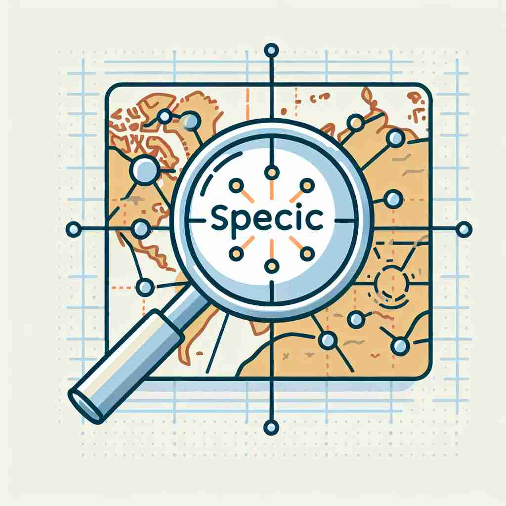

💬 The doctor is checking for specific symptoms in the patient's arm. 医生正在检查病人手臂上的特定症状。

💬 The teacher gave specific instructions for the assignment. 老师给出了作业的具体指示。
💬 The chef is looking for a specific type of cheese for the recipe. 厨师正在寻找一种特定类型的奶酪来做菜谱。

💬 The magnifying glass shows a specific location on the map. 放大镜显示了地图上的一个特定位置。
🧠 想象'specific'是一个精确的激光点，它可以准确地指向或定义某个东西。这个精确的核心概念贯穿了所有含义：无论是明确定义、特定领域、特定用途还是特定特征，都源于这个精确指向的idea。记忆时，可以想象用激光笔精确指向不同的对象或概念。
🔈 [spə'sɪfɪk]
🗝️ adj. clearly defined or identified; precise and exact 清晰定义或识别；精确准确
🎭 在一个科学实验室中，研究员正在定义实验步骤。他仔细地标注每一个试管的位置和用途，确保过程 precise and exact，就像烹饪高级菜肴时，厨师会精确测量每种香料的份量一样，这体现了'specific'在此处的精准意义。
💬 Could you be more specific about what you want? 你能更具体地说明你想要什么吗？
🌳 由词根 'spec' （看、观察）加上形容词后缀 '-ific'（使...的）构成，表示 '具体的，明确的'。
🕸️ 1.specify: 指定 2.species: 物种 3.aspect: 方面
💡 记忆 'specific' 时，可以联想为 '特别观察' 的内容，即某些事物被单独挑出来重点描述，从而强调其特定性和明确性。